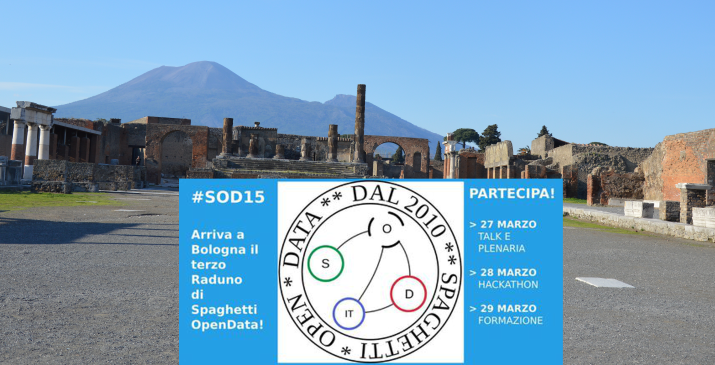

di Ilaria Vitellio – Ceo Mappina
2.668.178 persone, nel 2014, hanno visitato il sito archeologico di Pompei, non si sa quanti di questi o di altri possibili visitatori sono entrati nel sito web ufficiale, quello gestito dalla Soprintendenza. Ma se pur il dato ci fosse bisognerebbe estrarne quello qualitativo e fare emergere lo spaesamento che probabilmente si prova accedendo al web.
Certo, la Soprintendenza speciale per i beni archeologici di Pompei, Ercolano e Stabia, fa il suo lavoro: si presenta, gestisce bandi, eventi e mostre, documenta, elabora e presenta i progetti esistenti. Ma se volete andare a Pompei e vi volete documentare prima sul web, cosa del tutto normale, dotatevi di pazienza e curiosità perché le informazioni utili sono nascoste (nei box laterali o nelle pagine successive) e dovrete intraprendere una piccola caccia al tesoro della conoscenza.
Sappiamo che una parte del pubblico denaro del Grande Progetto Pompei, sarà investito per un piano della comunicazione che migliori questo aspetto specifico. Vogliamo quindi provare a dare un contributo alla pubblica amministrazione provando a rifare il sito di Pompei, per suggerire anche quali potrebbero essere le informazioni utili.
Così ci siamo domandati: “come suggerire la costruzione di un sito web con uno stile di comunicazione che diffonda la conoscenza e faciliti l’accesso reale e virtuale?”
I contenuti sono tutti già in rete. Dispersi nel mondo del web ci sono mappe, immagini, informazioni, storie e altri dati rilasciati con licenze libere e utilizzabili, ri-utilizzabili e ridistribuibili: i dati, come Pompei, appartengono al genere umano, basta recuperali e dargli senso.
Poichè non crediamo di essere i soli ad esserci fatta questa domanda e poichè sappiamo che il mondo è pieno di competenze, conoscenze, di civismo attivo e voglia di fare, vogliamo radunare il maggior numero possibile di persone per lavorare insieme a rifare il sito web di Pompei e regalarlo al mondo. E’ questo l’obiettivo dell’hackathon organizzato al terzo raduno annuale di Spaghetti Open Data che si tiene a Bologna, 27-29 marzo 2015 e a cui chiunque può registrarsi.
Spaghetti Open Data – SOD è una comunità di civismo attivo che “fa cose con dati”, vi partecipano una varietà di persone con competenze diverse interessate al rilascio di dati pubblici in formato aperto, in modo da renderne facile l’accesso e il riuso. Insomma una comunità il cui collante è la voglia di praticare la democrazia costruendo modi possibili a partire dagli open data. Non bisogna essere smanettoni per partecipare – io ad esempio sono un urbanista, quando cerco di smanettare mi si blocca il computer e se mi parlano in html sorrido per educazione – ed esistono almeno 10 buoni motivi per farlo, come sostiene Ida Leone, già attiva nell’adunare contenuti su Pompei.
Saranno due ore di lavoro insieme che ci auguriamo non finiscano a SODBologna, perché sappiamo, da esperienze pregresse come Confiscati Bene, che SOD è il miglior modo per iniziare!

{kind=link}